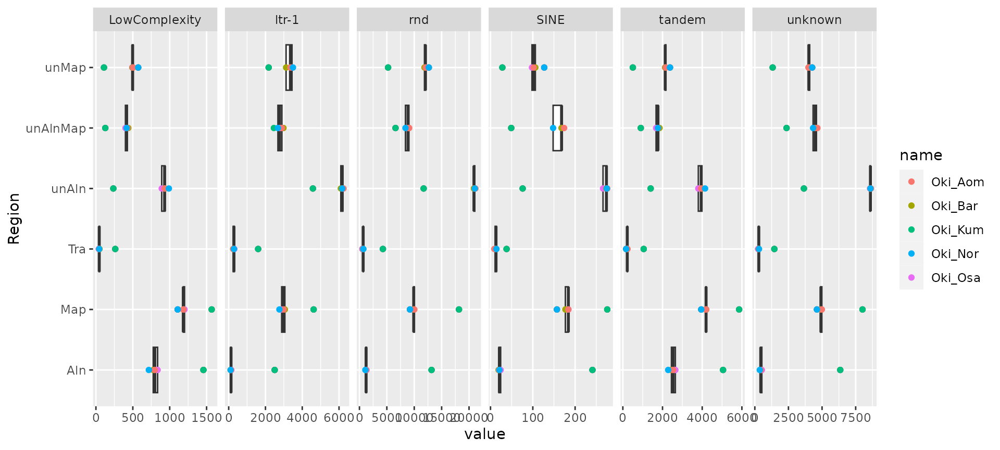
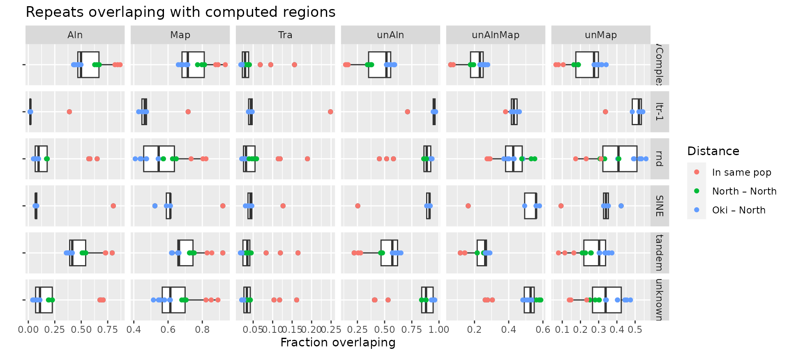
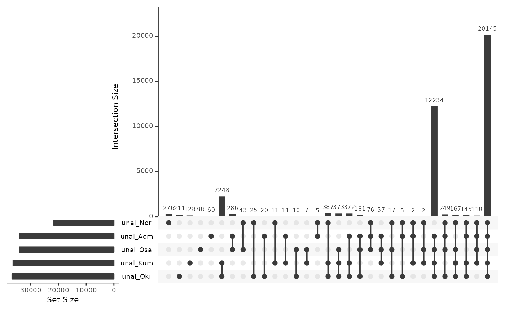
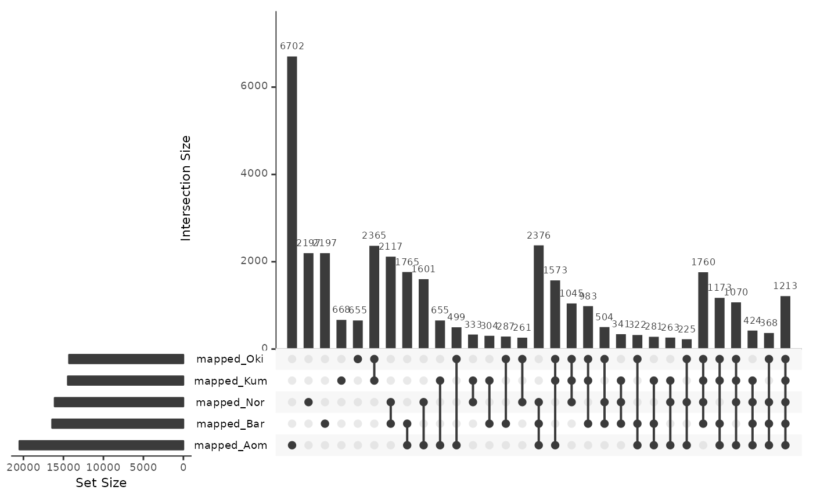
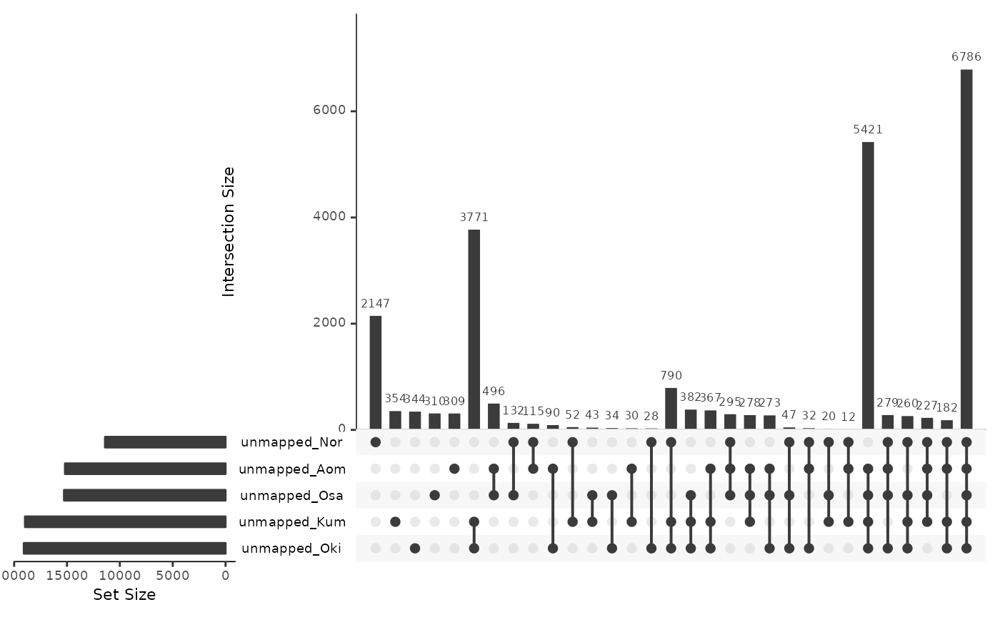
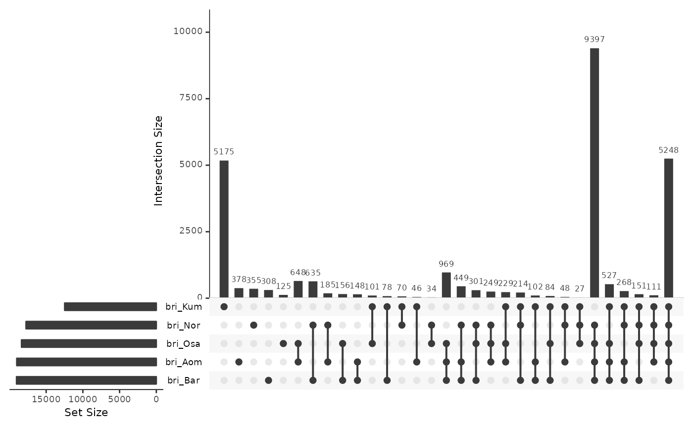
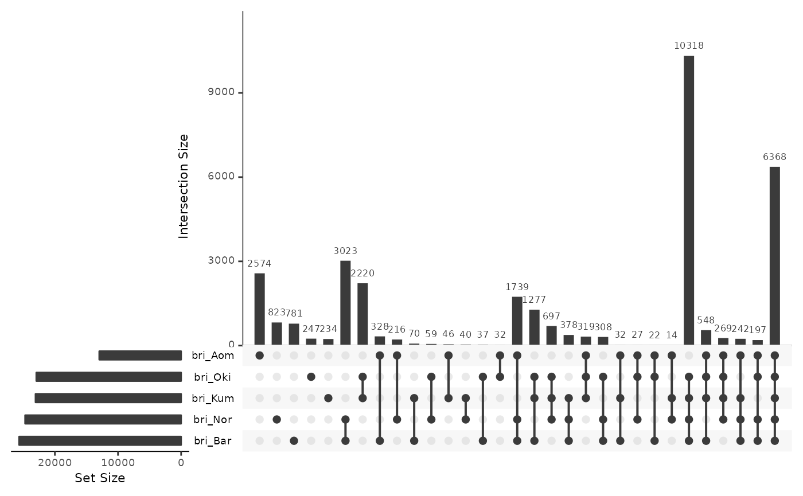
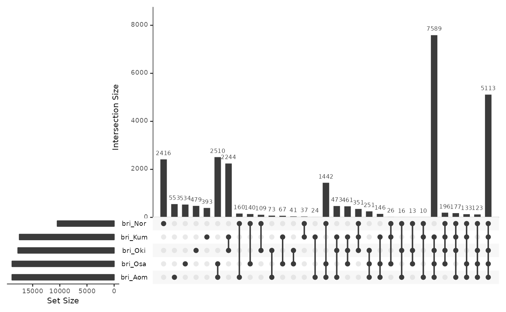
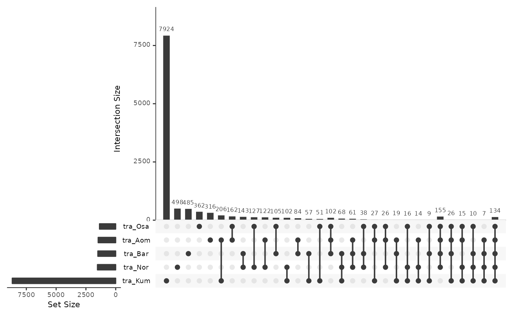
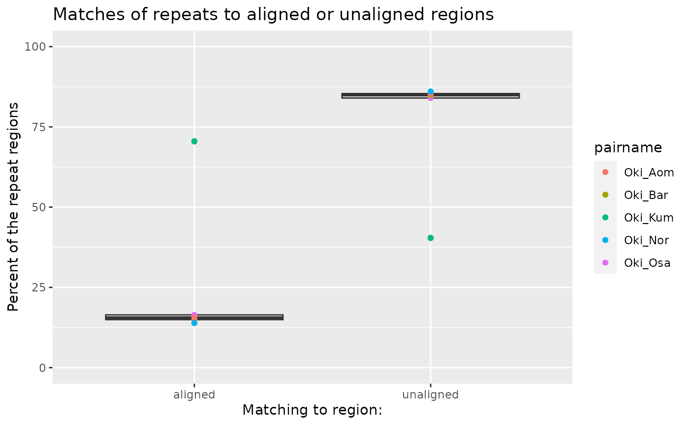

Repeat regions
Charles Plessy
13 October, 2023
Source:vignettes/RepeatRegions.Rmd
RepeatRegions.Rmd
knitr::opts_chunk$set(cache = TRUE, cache.lazy = FALSE)
knitr::opts_knit$set(verbose = TRUE)Load R pacakges and data
library('OikScrambling') |> suppressPackageStartupMessages()
(genomes <- OikScrambling:::loadAllGenomes())## Warning in runHook(".onLoad", env, package.lib, package): input string
## 'Génoscope' cannot be translated from 'ANSI_X3.4-1968' to UTF-8, but is valid
## UTF-8
## Warning in runHook(".onLoad", env, package.lib, package): input string
## 'Génoscope' cannot be translated from 'ANSI_X3.4-1968' to UTF-8, but is valid
## UTF-8## List of length 6
## names(6): Oki Osa Bar Kum Aom Nor
(reps <- OikScrambling:::loadAllRepeats())## List of length 6
## names(6): Oki Osa Bar Kum Aom Nor
(load("BreakPoints.Rdata"))## [1] "gbs" "unal" "coa" "unmap" "bri" "tra"
## [7] "tra2" "coa2" "unmap2" "wgo" "longShort"See
vignette("LoadGenomicBreaks", package = "OikScrambling")
for how the different GBreaks objects are prepared.
Repeats intersecting with GBreaks regions
Compute
reps_in <- list()
Oki_pairs <- c("Oki_Osa", "Oki_Bar", "Oki_Kum", "Oki_Aom", "Oki_Nor")
Osa_pairs <- c("Osa_Oki", "Osa_Bar", "Osa_Kum", "Osa_Aom", "Osa_Nor")
Bar_pairs <- c("Bar_Oki", "Bar_Osa", "Bar_Kum", "Bar_Aom", "Bar_Nor")
mkRepsIn <- function(pairs, reps) {
tableIntersectWithReps <- function(gb) {
ov <- subsetByOverlaps(reps, gb, ignore.strand = TRUE)
table(ov$Class)
}
reps_in <- list()
reps_in$total <- sapply( pairs , \(.) table(reps$Class))
reps_in$unal <- sapply(unal [pairs], tableIntersectWithReps)
reps_in$gbs <- sapply(gbs [pairs], tableIntersectWithReps)
reps_in$unmap <- sapply(unmap [pairs], tableIntersectWithReps)
reps_in$unmap2 <- sapply(unmap2 [pairs], tableIntersectWithReps)
reps_in$bri <- sapply(bri[pairs], tableIntersectWithReps)
reps_in$map <- sapply(coa [pairs], tableIntersectWithReps)
reps_in$map2 <- sapply(coa2 [pairs], tableIntersectWithReps)
reps_in$tra <- sapply(tra [pairs], tableIntersectWithReps)
reps_in
}
reps_in_Oki <- mkRepsIn(Oki_pairs, reps$Oki)
reps_in_Osa <- mkRepsIn(Osa_pairs, reps$Osa)
reps_in_Bar <- mkRepsIn(Bar_pairs, reps$Bar)
toLong <- function(m, Region = NULL) {
m <- tibble::as_tibble(m, rownames = "Class") |>
tidyr::pivot_longer(colnames(m))
if (! is.null(Region))
m <- dplyr::mutate(m, Region = Region)
m
}
reps_in_Oki.norm <- lapply(reps_in_Oki, \(x) x / reps_in_Oki$total)
reps_in_Osa.norm <- lapply(reps_in_Osa, \(x) x / reps_in_Osa$total)
reps_in_Bar.norm <- lapply(reps_in_Bar, \(x) x / reps_in_Bar$total)
toLong.reps <- function(reps_in)
rbind(
toLong(reps_in$unmap, "unMap"),
toLong(reps_in$bri, "unAlnMap"),
toLong(reps_in$map, "Map"),
toLong(reps_in$gbs, "Aln"),
toLong(reps_in$unal, "unAln"),
toLong(reps_in$tra, "Tra")
)
reps_in_Oki.long <- toLong.reps(reps_in_Oki)
reps_in_Osa.long <- toLong.reps(reps_in_Osa)
reps_in_Bar.long <- toLong.reps(reps_in_Bar)
reps_in_Oki.norm.long <- toLong.reps(reps_in_Oki.norm)
reps_in_Osa.norm.long <- toLong.reps(reps_in_Osa.norm)
reps_in_Bar.norm.long <- toLong.reps(reps_in_Bar.norm)Summary numbers
sapply(reps_in_Oki.norm, rowMeans)## total unal gbs unmap unmap2 bri
## LowComplexity 1 0.4745682 0.54615843 0.2592019 0.2538416 0.2153663
## ltr-1 1 0.9098417 0.09239367 0.4839491 0.4380317 0.4276001
## rnd 1 0.8469141 0.15840375 0.4767686 0.4534000 0.3710569
## SINE 1 0.7780000 0.21666667 0.3073333 0.2906667 0.4713333
## tandem 1 0.5424133 0.46963753 0.2923270 0.2788326 0.2503060
## unknown 1 0.8472003 0.18038517 0.3934320 0.3749304 0.4545475
## map map2 tra
## LowComplexity 0.7440143 0.7488982 0.05205479
## ltr-1 0.5061472 0.5438063 0.08329711
## rnd 0.5060656 0.5235500 0.06104499
## SINE 0.6520000 0.6660000 0.05666667
## tandem 0.7028401 0.7153931 0.05953240
## unknown 0.6103974 0.6229990 0.05708561
sapply(reps_in_Osa.norm, rowMeans)## total unal gbs unmap unmap2 bri map
## LowComplexity 1 0.3786448 0.6078029 0.1980835 0.1919233 0.1808350 0.7620808
## rnd 1 0.7903099 0.2380329 0.3250682 0.3085441 0.4663150 0.6365411
## tandem 1 0.4687947 0.5182976 0.2320251 0.2235828 0.2369789 0.7338217
## unknown 1 0.7687199 0.2581531 0.2702265 0.2566158 0.4993748 0.6919545
## map2 tra
## LowComplexity 0.7663244 0.04257358
## rnd 0.6477715 0.05037899
## tandem 0.7406942 0.04678179
## unknown 0.7003997 0.04759660
sapply(reps_in_Bar.norm, rowMeans)## total unal gbs unmap unmap2 bri map
## LowComplexity 1 0.4195983 0.6105904 0.2225198 0.2177724 0.1973220 0.7727328
## rnd 1 0.8396612 0.2151969 0.4237909 0.4105560 0.4170070 0.5652549
## tandem 1 0.4942132 0.5121783 0.2778027 0.2751080 0.2166868 0.7055450
## unknown 1 0.8326723 0.2586960 0.3292053 0.3188757 0.5050364 0.6728492
## map2 tra
## LowComplexity 0.7755326 0.03469264
## rnd 0.5728714 0.05364900
## tandem 0.7069960 0.03959233
## unknown 0.6781281 0.04642602Summary plots
Note that Oki has more repeat classes.
# Here, the outlier is the same-species comparison, Okinawa – Kume
ggplot(reps_in_Oki.long) + aes(Region, value) +
geom_boxplot() + geom_point(aes(col = name)) +
facet_grid(~Class, scales = "free") + coord_flip()
# There, the outliers are the same-species comparison, Bar – Nor and Osa – Aom.
ggplot(rbind(reps_in_Osa.long, reps_in_Bar.long)) + aes(Region, value) +
geom_boxplot() + geom_point(aes(col = name)) +
facet_grid(~Class, scales = "free") + coord_flip()
# Summary plot combining all comparisons
ggplot(rbind(
reps_in_Oki.norm.long,
reps_in_Osa.norm.long,
reps_in_Bar.norm.long
) |> dplyr::mutate(Distance = OikScrambling:::compDistance(name))) +
aes(x="", value) + xlab("") +
geom_boxplot() + geom_point(aes(col = Distance)) +
facet_grid(~Class ~Region, scales = "free") + coord_flip() +
ylab("Fraction overlaping") +
ggtitle("Repeats overlaping with computed regions")
Tracking repeats across genome pairs
The upset plots below show whether a repeat in the Okinawa or the Osaka genome as target genome is located in an given region in respect to one or many of the query genomes.
Note: Some repeat annotations overlap.
Aligned
More than 10,000 repeat annotations are in regions aligned to the same-population control genome, demonstrating that they are mapable in principle.
isPresent <- function(r, gb) ifelse(countOverlaps(r,gb) == 0, 0, 1)
alignedRepsOki <- data.frame(
align_Osa = isPresent(reps$Oki, gbs$Oki_Osa),
align_Aom = isPresent(reps$Oki, gbs$Oki_Aom),
align_Bar = isPresent(reps$Oki, gbs$Oki_Bar),
align_Nor = isPresent(reps$Oki, gbs$Oki_Nor),
align_Kum = isPresent(reps$Oki, gbs$Oki_Kum)
)
UpSetR::upset(alignedRepsOki)
alignedRepsOsa <- data.frame(
align_Oki = isPresent(reps$Osa, gbs$Osa_Oki),
align_Bar = isPresent(reps$Osa, gbs$Osa_Bar),
align_Nor = isPresent(reps$Osa, gbs$Osa_Nor),
align_Kum = isPresent(reps$Osa, gbs$Osa_Kum),
align_Aom = isPresent(reps$Osa, gbs$Osa_Aom)
)
UpSetR::upset(alignedRepsOsa)
alignedRepsBar <- data.frame(
align_Oki = isPresent(reps$Bar, gbs$Bar_Oki),
align_Osa = isPresent(reps$Bar, gbs$Bar_Osa),
align_Nor = isPresent(reps$Bar, gbs$Bar_Nor),
align_Kum = isPresent(reps$Bar, gbs$Bar_Kum),
align_Aom = isPresent(reps$Bar, gbs$Bar_Aom)
)
UpSetR::upset(alignedRepsBar)Unaligned
~40,000 repeat annotations are in regions that are not aligned to a different-population_query_ genome. This might be caused by insertions and deletions.
unalignedRepsOki <- data.frame(
unal_Osa = isPresent(reps$Oki, unal$Oki_Osa),
unal_Aom = isPresent(reps$Oki, unal$Oki_Aom),
unal_Bar = isPresent(reps$Oki, unal$Oki_Bar),
unal_Nor = isPresent(reps$Oki, unal$Oki_Nor),
unal_Kum = isPresent(reps$Oki, unal$Oki_Kum)
)
UpSetR::upset(unalignedRepsOki)
unalignedRepsOsa <- data.frame(
unal_Oki = isPresent(reps$Osa, unal$Osa_Oki),
unal_Bar = isPresent(reps$Osa, unal$Osa_Bar),
unal_Nor = isPresent(reps$Osa, unal$Osa_Nor),
unal_Kum = isPresent(reps$Osa, unal$Osa_Kum),
unal_Aom = isPresent(reps$Osa, unal$Osa_Aom)
)
UpSetR::upset(unalignedRepsOsa)
alignedRepsBar <- data.frame(
unal_Oki = isPresent(reps$Bar, unal$Bar_Oki),
unal_Osa = isPresent(reps$Bar, unal$Bar_Osa),
unal_Nor = isPresent(reps$Bar, unal$Bar_Nor),
unal_Kum = isPresent(reps$Bar, unal$Bar_Kum),
unal_Aom = isPresent(reps$Bar, unal$Bar_Aom)
)
UpSetR::upset(alignedRepsBar)
Mapped
mappedRepsOki <- data.frame(
mapped_Osa = isPresent(reps$Oki, coa$Oki_Osa),
mapped_Aom = isPresent(reps$Oki, coa$Oki_Aom),
mapped_Bar = isPresent(reps$Oki, coa$Oki_Bar),
mapped_Nor = isPresent(reps$Oki, coa$Oki_Nor),
mapped_Kum = isPresent(reps$Oki, coa$Oki_Kum)
)
UpSetR::upset(mappedRepsOki)
mappedRepsOsa <- data.frame(
mapped_Oki = isPresent(reps$Osa, coa$Osa_Oki),
mapped_Bar = isPresent(reps$Osa, coa$Osa_Bar),
mapped_Nor = isPresent(reps$Osa, coa$Osa_Nor),
mapped_Kum = isPresent(reps$Osa, coa$Osa_Kum),
mapped_Aom = isPresent(reps$Osa, coa$Osa_Aom)
)
UpSetR::upset(mappedRepsOsa)
mappedRepsBar <- data.frame(
mapped_Oki = isPresent(reps$Bar, coa$Bar_Oki),
mapped_Osa = isPresent(reps$Bar, coa$Bar_Osa),
mapped_Nor = isPresent(reps$Bar, coa$Bar_Nor),
mapped_Kum = isPresent(reps$Bar, coa$Bar_Kum),
mapped_Aom = isPresent(reps$Bar, coa$Bar_Aom)
)
UpSetR::upset(mappedRepsBar)Unmapped
unmappedRepsOki <- data.frame(
unmapped_Osa = isPresent(reps$Oki, unmap$Oki_Osa),
unmapped_Aom = isPresent(reps$Oki, unmap$Oki_Aom),
unmapped_Bar = isPresent(reps$Oki, unmap$Oki_Bar),
unmapped_Nor = isPresent(reps$Oki, unmap$Oki_Nor),
unmapped_Kum = isPresent(reps$Oki, unmap$Oki_Kum)
)
UpSetR::upset(unmappedRepsOki)
unmappedRepsOsa <- data.frame(
unmapped_Oki = isPresent(reps$Osa, unmap$Osa_Oki),
unmapped_Bar = isPresent(reps$Osa, unmap$Osa_Bar),
unmapped_Nor = isPresent(reps$Osa, unmap$Osa_Nor),
unmapped_Kum = isPresent(reps$Osa, unmap$Osa_Kum),
unmapped_Aom = isPresent(reps$Osa, unmap$Osa_Aom)
)
UpSetR::upset(unmappedRepsOsa)
unmappedRepsBar <- data.frame(
unmapped_Oki = isPresent(reps$Bar, unmap$Bar_Oki),
unmapped_Osa = isPresent(reps$Bar, unmap$Bar_Osa),
unmapped_Nor = isPresent(reps$Bar, unmap$Bar_Nor),
unmapped_Kum = isPresent(reps$Bar, unmap$Bar_Kum),
unmapped_Aom = isPresent(reps$Bar, unmap$Bar_Aom)
)
UpSetR::upset(unmappedRepsBar)
Unaligned but mapped by flanking colinear blocks
briRepsOki <- data.frame(
bri_Osa = isPresent(reps$Oki, bri$Oki_Osa),
bri_Aom = isPresent(reps$Oki, bri$Oki_Aom),
bri_Bar = isPresent(reps$Oki, bri$Oki_Bar),
bri_Nor = isPresent(reps$Oki, bri$Oki_Nor),
bri_Kum = isPresent(reps$Oki, bri$Oki_Kum)
)
UpSetR::upset(briRepsOki)
briRepsOsa <- data.frame(
bri_Oki = isPresent(reps$Osa, bri$Osa_Oki),
bri_Bar = isPresent(reps$Osa, bri$Osa_Bar),
bri_Nor = isPresent(reps$Osa, bri$Osa_Nor),
bri_Kum = isPresent(reps$Osa, bri$Osa_Kum),
bri_Aom = isPresent(reps$Osa, bri$Osa_Aom)
)
UpSetR::upset(briRepsOsa)
briRepsBar <- data.frame(
bri_Oki = isPresent(reps$Bar, bri$Bar_Oki),
bri_Osa = isPresent(reps$Bar, bri$Bar_Osa),
bri_Nor = isPresent(reps$Bar, bri$Bar_Nor),
bri_Kum = isPresent(reps$Bar, bri$Bar_Kum),
bri_Aom = isPresent(reps$Bar, bri$Bar_Aom)
)
UpSetR::upset(briRepsBar)
Transposed
traRepsOki <- data.frame(
tra_Osa = isPresent(reps$Oki, tra$Oki_Osa),
tra_Aom = isPresent(reps$Oki, tra$Oki_Aom),
tra_Bar = isPresent(reps$Oki, tra$Oki_Bar),
tra_Nor = isPresent(reps$Oki, tra$Oki_Nor),
tra_Kum = isPresent(reps$Oki, tra$Oki_Kum)
)
UpSetR::upset(traRepsOki)
traRepsOsa <- data.frame(
tra_Oki = isPresent(reps$Osa, tra$Osa_Oki),
tra_Bar = isPresent(reps$Osa, tra$Osa_Bar),
tra_Nor = isPresent(reps$Osa, tra$Osa_Nor),
tra_Kum = isPresent(reps$Osa, tra$Osa_Kum),
tra_Aom = isPresent(reps$Osa, tra$Osa_Aom)
)
UpSetR::upset(traRepsOsa)
traRepsBar <- data.frame(
tra_Oki = isPresent(reps$Bar, tra$Bar_Oki),
tra_Osa = isPresent(reps$Bar, tra$Bar_Osa),
tra_Nor = isPresent(reps$Bar, tra$Bar_Nor),
tra_Kum = isPresent(reps$Bar, tra$Bar_Kum),
tra_Aom = isPresent(reps$Bar, tra$Bar_Aom)
)
UpSetR::upset(traRepsBar)Repeat annotation of the GBreaks objects
See
vignette("LoadGenomicBreaks", package = "OikScrambling")
for how the different GBreaks objects are annotated.
countGbsMatchingReps <- function(gb) sum(sapply(gb$rep, \(x) ! any(is.na(x))))
fracGbsMatchingReps <- function(gbl) sapply(gbl, countGbsMatchingReps) / sapply(gbl, length)
summaryMatchingReps <- (sapply(list(aligned = gbs[1:15], unAligned = unal[1:15],
mapped = coa[1:15], unMapped = unmap[1:15],
unAlMapped = bri[1:15],
transposed = tra[1:15], transposed2 = tra2[1:15],
mapped2 = coa2[1:15], unMapped2 = unmap2[1:15]),
fracGbsMatchingReps))
summaryMatchingReps |> tibble::as_tibble() |>
dplyr::group_by(dist=rownames(summaryMatchingReps) |> OikScrambling:::compDistance()) |>
dplyr::summarise_all(mean)## # A tibble: 3 × 10
## dist aligned unAligned mapped unMapped unAlMapped transposed transposed2
## <chr> <dbl> <dbl> <dbl> <dbl> <dbl> <dbl> <dbl>
## 1 In same p… 0.678 0.598 0.809 0.580 0.531 0.808 0.840
## 2 North – N… 0.297 0.494 0.602 0.487 0.486 0.661 0.742
## 3 Oki – Nor… 0.135 0.360 0.404 0.381 0.349 0.533 0.612
## # ℹ 2 more variables: mapped2 <dbl>, unMapped2 <dbl>Reduced repeat set
Old plots; they show that the above is also true if we merge overlapping repeats.
reps.reduced <- sapply(reps, reduce, ignore.strand = TRUE) |> SimpleList()
# They are short.
sapply(reps.reduced, \(gr) summary(width(gr)))## Oki Osa Bar Kum Aom Nor
## Min. 15.0000 9.0000 12.0000 13.0000 11.0000 11.0000
## 1st Qu. 58.0000 66.0000 57.0000 59.0000 67.0000 63.0000
## Median 129.0000 159.0000 143.0000 134.0000 157.0000 152.0000
## Mean 293.5162 226.8387 267.7418 278.6945 239.4878 295.5797
## 3rd Qu. 281.0000 286.0000 267.0000 292.0000 282.0000 330.0000
## Max. 25734.0000 9208.0000 62015.0000 24020.0000 41142.0000 17402.0000Colinearity interruptors (unmapped regions ?)
(reps_coa <- tibble::tibble(
pairname = Oki_pairs,
total = length(reps.reduced$Oki),
match_unmap = sapply(unmap[Oki_pairs], \(gb) length(subsetByOverlaps(reps.reduced$Oki, gb))),
match_map = sapply( coa[Oki_pairs], \(gb) length(subsetByOverlaps(reps.reduced$Oki, gb))),
mapped = match_map / total * 100,
unmapped = match_unmap / total * 100,
sum = mapped + unmapped
))## # A tibble: 5 × 7
## pairname total match_unmap match_map mapped unmapped sum
## <chr> <int> <int> <int> <dbl> <dbl> <dbl>
## 1 Oki_Osa 31520 14906 16185 51.3 47.3 98.6
## 2 Oki_Bar 31520 14804 16150 51.2 47.0 98.2
## 3 Oki_Kum 31520 5351 27409 87.0 17.0 104.
## 4 Oki_Aom 31520 14898 16339 51.8 47.3 99.1
## 5 Oki_Nor 31520 15834 15177 48.2 50.2 98.4
ggplot(reps_coa |> tidyr::pivot_longer(c("mapped", "unmapped"))) +
aes(name, value) +
ggtitle("Matches of repeats to mapped or unmaped regions") +
scale_y_continuous(limits = c(0, 100)) +
ylab("Percent of the repeat regions") +
xlab("Matching to region:") +
geom_boxplot() +
geom_point(aes(col = pairname))
Unaligned regions
(reps_gbs <- tibble::tibble(
pairname = Oki_pairs,
total = length(reps.reduced$Oki),
match_unal = sapply(unal[Oki_pairs], \(gb) length(subsetByOverlaps(reps.reduced$Oki, gb))),
match_al = sapply(gbs[Oki_pairs], \(gb) length(subsetByOverlaps(reps.reduced$Oki, gb))),
aligned = match_al / total * 100,
unaligned = match_unal / total * 100,
sum = aligned + unaligned
))## # A tibble: 5 × 7
## pairname total match_unal match_al aligned unaligned sum
## <chr> <int> <int> <int> <dbl> <dbl> <dbl>
## 1 Oki_Osa 31520 26475 5178 16.4 84.0 100.
## 2 Oki_Bar 31520 26762 4712 14.9 84.9 99.9
## 3 Oki_Kum 31520 12735 22222 70.5 40.4 111.
## 4 Oki_Aom 31520 26910 4906 15.6 85.4 101.
## 5 Oki_Nor 31520 27116 4379 13.9 86.0 99.9
ggplot(reps_gbs |> tidyr::pivot_longer(c("aligned", "unaligned"))) +
aes(name, value) +
ggtitle("Matches of repeats to aligned or unaligned regions") +
scale_y_continuous(limits = c(0, 100)) +
ylab("Percent of the repeat regions") +
xlab("Matching to region:") +
geom_boxplot() +
geom_point(aes(col = pairname))
Repeat annotation of the shortest mapped regions
In Oki – North comparisons, the distribution of mapped region widths
is bimodal and the two peaks are best separated around 600 bp. See
vignette("RegionWidths", package = "OikScrambling") for
details.
coa$Oki_Osa |> plyranges::mutate(w_short = width < 600) |> as.data.frame() |> tibble::as_tibble() |>
ggplot() + aes(width, col =Arm) +
geom_freqpoly() + scale_x_log10() +
geom_vline(xintercept = 600) +
ggtitle("Example width distribution of mapped regions (Oki_Osa)")## `stat_bin()` using `bins = 30`. Pick better value with `binwidth`.
We want to know if the regions of width shorter than 600 match more repeats, and to what extent the matching repeats cover them.
checkOverlapWithRepeatsInShortAndLongWidthRegions <- function(gr, rep) {
grl <- gr |> split(width(gr) < 600)
tibble::tibble(
`Length` = c(Long = "Long", Short = "Short"),
`Number of regions` = c(Long = length(grl[["FALSE"]]),
Short = length(grl[["TRUE"]])),
`Total width` = c(Long = grl[["FALSE"]] |> reduce() |> width() |> sum(),
Short = grl[["TRUE"]] |> reduce() |> width() |> sum()),
`Width covered by reps` = c(Long = intersect(grl[["FALSE"]], rep) |> reduce() |> width() |> sum(),
Short = intersect(grl[["TRUE"]], rep) |> reduce() |> width() |> sum())
)
}
checkOverlapWithRepeatsInShortAndLongWidthRegions(coa$Oki_Osa, reps$Oki)## # A tibble: 2 × 4
## Length `Number of regions` `Total width` `Width covered by reps`
## <chr> <int> <int> <int>
## 1 Long 5664 44510187 1978784
## 2 Short 3179 858460 6205
checkOverlapWithRepeatsInShortAndLongWidthRegions(coa$Osa_Oki, reps$Osa)## # A tibble: 2 × 4
## Length `Number of regions` `Total width` `Width covered by reps`
## <chr> <int> <int> <int>
## 1 Long 5624 41234589 2102670
## 2 Short 3212 851419 4123
checkOverlapWithRepeatsInShortAndLongWidthRegions(coa$Bar_Oki, reps$Bar)## # A tibble: 2 × 4
## Length `Number of regions` `Total width` `Width covered by reps`
## <chr> <int> <int> <int>
## 1 Long 5295 39663995 1638582
## 2 Short 3198 822315 5703In conclusion, most of the short mapped regions are not mapped repeats.